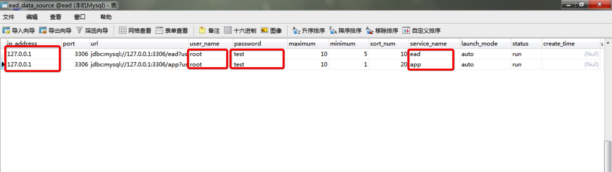

2. 配置数据初始化
EAD 平台依靠自身的开发者中心配置开发每一个应用，在首次部署安装平台时，要依照以下说明进行开发者中心配置数据初始化。
核心配置库（ead）
EAD 平台开发应用的核心思想是数据定义软件，每一个应用都是有一些核心的配置数据构成，其中也包括自身的开发者平台，为了能够使用 EAD 进行应用开发，必须按以下步骤初始化核心配置库：
第一步：初始化配置库结构；
运行 ead.sql 文件，进行数据库结构初始化；
第二步：导入开发者中心（develop）应用配置数据；
运行以下 ead_init.sql 文件，进行开发者中心应用配置数据初始化；
第三步：修改数据源配置表中的配置；
默认在配置数据库中初始化了配置库和系统库的数据源配置信息，需要在导入数据后进行配置数据修改；

系统库（app）
除核心配置库以外，EAD 平台本身也带有一些通用基础功能，如用户管理、组织结构管理、角色管理、授权管理，系统动态等。当然也必须先有用户，才能登录开发者平台，所以在平台初始化时，必须按照以下步骤对系统库进行初始化；
第一步：初始化系统库结构；
运行 sys.sql 文件，进行数据库结构初始化；
第二步：导入超级开发账号及权限；
运行 sys_init.sql 文件，进行开发者中心应用开发者账号初始化；